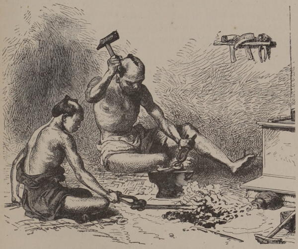

“Japanese workers in metals”
Japan: Historical and Descriptive (1877)
At Kobi, as at many points on the coast, large quantities of magnetic-iron sand are concentrated on the beach by the surf, and a bed of the same material, much oxidized, crops out in the bluff deposits, which are themselves raised beaches. The Imperial Government, wishing to manufacture cannon for the defence of Yesso against the Russians, commanded Takeda, an officer afterward attached to us, and one who had done much to advance in his country the knowledge of military engineering and navigation, to build a furnace on the foreign plan, for the purpose of smelting this ore. Such a thing had never been seen by a Japanese, but without further plans or specifications than were given in a Dutch work on chemistry, Takeda built a furnace about thirty feet high, after a really fine model, with a cylinder blast, moved by an excellent water-wheel. Unfortunately, owing to the absence of all details on the subject in the only book he had, the blast was far too weak, and the bricks not sufficiently refractory. The furnace thus proved a failure, after smelting a few hundred-weight of iron. The incident, however, will serve as an illustration of Japanese enterprise. Another of our officers, Oosima, by dint of repeated experiments, carried a similar undertaking to a more successful issue in the province of Nambu.
Across America and Asia (1870)
One exceedingly pleasant and interesting day of our first month was spent in visiting the paper mills of Ogi, a short drive from the city [Tokyo], under the guidance of their excellencies the minister of finance (in whose department part of them are) and the minister of public works. The art of paper-making is one in which the Japanese have long excelled, some of their paper productions surpassing in strength, and others in parchment-like qualities, those of every other country, even down to the present time. ... By the kindness of the government I was able to bring away with me assorted specimens of the productions of Ogi and of other mills, and so beautiful are some of these that I was not surprised to find the Ogi factory executing large orders from the French and Russian governments, and from several private firms in Europe, the quality most in request being a beautiful fine-surfaced paper of excessive toughness, which is found very valuable as a material for military maps, and for other purposes in which great durability and power of sustaining much wear and tear without injury are objects of first importance. ...
The Ogi mills comprise one which belongs to a company, and which is fitted up throughout with English machinery, first for preparing the materials by sorting, cutting, dusting, boiling, washing, bleaching, beating, and colouring; and secondly for converting the prepared material into finished sheets of paper, by the processes of straining, knotting (the separation of knots, impurities, or of matted fibre which has formed into strings, or is insufficiently ground), making, pressing, drying, glazing, cutting, sorting, polishing, and packing. The machinery was supplied by Messrs. Easton and Anderson, of London and Erith, and is among the best that can be produced, embodying nearly every modern improvement. This machinery was ordered in August 1873, and was shipped to Japan in June 1874; by August 1875 it was at work, having been erected and fitted under a skilled European overseer, but entirely by the labour of Japanese artisans. The English officer, Mr. Frank Cheeseman, who superintended the work at Ogi, has stated that he was favourably impressed by the intelligence and skill of the Japanese workmen, and by the high character of the native gentlemen who own the mill. The mill is capable of producing from fifteen to twenty tons of paper per week.
Japan: Its History, Traditions, and Religions (1880)
It would amuse you to see how they load vessels with coal. The barges or lighters are rowed up alongside of the vessel that is to receive the coal. Men are down in the hold busily filling the baskets, which are handed along from one helper to the other, until they reach the vessel. These helpers form a line, and do not stand more than two feet apart. Most of this work is done by girls, and when, as with the collier lying near by, you can see about six or seven hundred of them at it at one and the same time, it is a busy scene. Although each worker remains in the one place until the task is completed, the movement of arms and baskets makes it look as if the great crowd was trying to climb up the ship’s side.
Jottings of Travel in China and Japan (1888)
The family [at the temple in Hikone] were very busy all through this month with their crop of silk-worms, which required incessant care and feeding. I was taken to see them first in an outbuilding when they were just little black specks; as they got older the air of this shed did not suit them, and they were moved into the Hondo, where they flourished and grew with astonishing rapidity under the eye of the Buddha, and devoured the baskets of chopped mulberry leaves as fast as they could be prepared. The caterpillars were huddled together on mats hung one above another in a framework; a netting of string was spread over each mat so that the whole mass could be lifted and the débris cleared away with very little trouble. When they had ceased to grow, and began to stand on end, waving their heads in the air after the idiotic fashion of silk-worms who want to spin, they were picked off and put in little nests of straw or bundles of brush-wood, which soon became a mass of soft yellow cocoons. It was an anxious time for O Shige San, for a considerable part of her income depended on the crop of silk; the cocoons are worth about thirty yen a koku, a measure rather less than five bushels.
Notes in Japan (1896)
At Oyama, the whole village seems given up to the silk industry. Every house appears to have its collection of silkworms feeding on mulberry leaves, or tossing aimlessly about on their layers of clean straw. There is, too, in every cottage a corner for the silk-loom, worked by hand, where back and forth the shuttle flies through the web. It was pleasant to walk through the town and take the peasants unawares at their work.
Rambles Through Japan Without a Guide (1892)
The unexpected is always happening. That which you look for, in the line of industries, does not appear, and that you do not anticipate is surest to come. If a man requires a new hat he goes to the basket-maker, and when his shoes are well worn he goes to the carpenter for another pair.
From Japan to Granada (1889)
In Kioto, as elsewhere, the government appears to have taken many measures for stimulating and aiding the productions and manufactures as well as the education of the country. Under the city government of Kioto there is an industrial department, the Kuwangiyoba, which was established in 1870 specially for the promotion of the industrial arts, and which has the following branches: 1. An experimental gardening department (Saibaishi Kenjo), commenced in 1872, for the cultivation of foreign and Japanese fruits and vegetables; 2. A shoe-manufactory (Seikuwajo), begun at the same time, for extending the manufacture of boots and shoes of European style; 3. A weaving-factory (Shokkoba), begun in 1873, where silks and other fabrics are woven, principally in foreign looms: this branch sent three workmen to Europe to learn the art of foreign weaving; 4. A physical and chemical branch (Semikiyoku), which has a sub-branch at Miyadju, in Tango, 80 miles distant, and which, with the assistance of two foreign workmen, is promoting and teaching the manufacture of chemicals, soap, effervescing and lemon drinks, cloisonné ware, porcelain, etc.; adjoining it is the Senkojo, for teaching dyeing on foreign methods; 5. The female industrial school, Jokoba ...; 6. The Bokujo, or more properly Bokuchikujo, which is an experimental farm, established in 1871 with the object of improving the breeding of cattle and of teaching agriculture, the foreign cattle and sheep being chiefly purchased in America, and the milk produced being sold in the city; a branch farm exists at Komo in Tamba, about sixteen miles from Kioto; 7. A department (Yosanba) for promoting the multiplication of silkworms; 8. A pauper industrial department (Jusansho), established in 1869, with a branch at Dosembo, in the south-eastern part of Kioto county, where agriculture and the manufacture of earthenware are the principal employments of the pauper colony; 9. A street-sweeping department (Kuwakaisho), where compost is prepared on the French method; 10. A paper-manufactory, established in 1875. There exist also separate branches for making and teaching how to prepare leather, beer, and mineral waters.
Japan: Its History, Traditions, and Religions (1880)
The whole of the railway system of Japan is now in process of nationalisation, and, a kind of State Socialism being very much in vogue just now, there is some talk of making a municipal concern of the electric railway as well. We are in a state of suspended judgment as to the practical results of these measures. Japanese smokers say that the nationalisation of the tobacco industry has not improved the quality of the native weed. It has certainly made a great difference in the price of foreign tobacco.
Every-day Japan (1909)
◀ CommerceAgriculture ▶